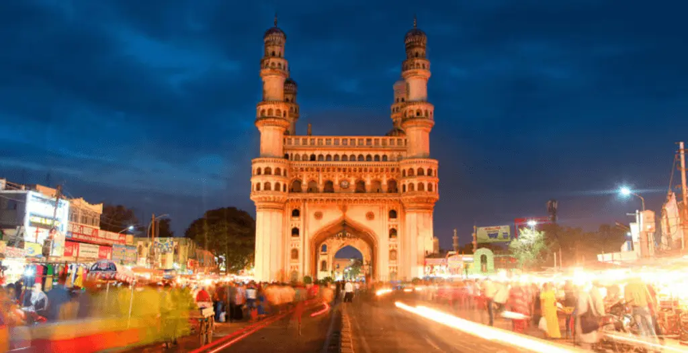

Telangana

Charminar
Birla Mandir
Golconda Fort
Ramoji Film City
Ethipothala Waterfalls
Andhra Pradesh
Padmanabhaswamy Temple
Araku valley
Godavari Arch Bridge
RK Beach
Tirupathi Temple
Tamil Nadu
Adhiyogi Shiva
Kodaikanal Lake

Madhurai Temple
Pykara Lake
Kuthirapanjan Falls
Kerala
Chinese Fishing Nets at Fort
kovalam Beach
Kumarakom Beach
Marari Beach
Munnar
Karnataka
ISCKCON Temple
Kotte Abbi Falls
Lalbagh Botanical Garden
Mysore Palace

Tadiandamol Treak